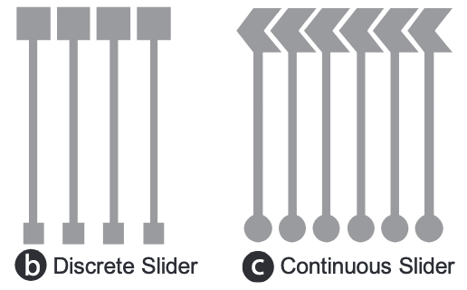
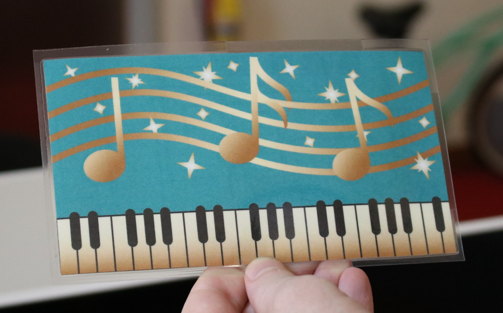

At the end of the lab, upload to your student google drive:
the circuit drawing (.pdf file format) you used for conductive inkjet printing
two photos showing the front and back of your inkjet printed card
(1) Install Drawing Program and Download Visual Design File
Download and Install Drawing Program: We recommend to use Adobe Illustrator, as all MIT students have access to free Adobe Creative Cloud here. All our instructions will be based on Adobe Illustrator. If you use a different drawing program, that's fine but we may be less knowledgable on how to use it and may not be able to help you as much.
Adjust the Document Settings: Once you opened the design file, adjust the document settings if necessary in the following way:
Set Document Color Mode to CMYK: Since we will print our document later, please set the document color mode to CMYK (not RGB, which is for on-screen documents). In Illustrator, you can set the color mode by clicking on File->Document Color Mode->CMYK Color
Set Units to mm: If your drawing is still set to 'pts' as a measurement unit, set it to mm. In Illustrator, you can set the units by clicking on Edit->Preferences->Units... and set all units to mm.
(2) Add Touch Buttons
For our interactive card, we want to add three touch buttons, one on each note (we will later use them to go to the next/previous song and pause/play the song). Touch-buttons consist of one shape + one wire + connector pad. One end of the wire connects to the touch button shape and the other end connects to a connector pad, which will in turn connect to the microcontroller.
Video Tutorial
Below, you'll find a video tutorial that shows you all steps to add one touch button. Your task will be to add all three touch buttons on top if the notes.
Create a New Layer: Start by creating a new layer in your design file for the circuit design. You need to create the circuit design on a separate layer than the visual design because later you need to export two files separately, the visual design in one pdf and the circuit design in a separate pdf. Using a separate layer for each allows you to turn each part of the design on/off quickly for export.
Draw the Touch Button Shape: Once you created your circuit design layer, draw the first touch button shape on it. A touch button should be large enough for a user's finger. The size of a finger tip is roughly an area of 2cm x 2cm. In the design we gave you, the size of each note body is roughly the size of a finger pad, so as long as you make a shape the size of the note it should be fine.
Draw the Connector Pad: In order to connect the touch sensor to your ESP32 microcontroller in a later lab, we have to add connector pads at the edge of the music card. The connector pad for the microcontroller needs to be large enough to connect to a crocodile clamp. Therefore, the connector pad should be 1cm x 1cm to be on the safe side. Make sure your connector pads are close enough to the border of the card so that a crocodile clamp can reach it (recommended to have lesser than 5mm distance from the border). Make sure to not exceed the boundaries of the music card since we will later cut it out.
Draw the Wire: Next, draw a wire from the touch button to the edge of the card (we recommend you route all your wires to the right edge of the card). Your wire should be 1mm thick. The thickness of the wire determines its conductivity (larger cross-section == higher conductivity). With 1mm we are on the safe side given the conductive ink we use and its resistance. Make sure that all wires are located inside the boundaries of your card since we will layer cut out the card.
Repeat all steps for the other two touch buttons.
(3) Add Touch Slider
In addition, the piano area should serve as a volume slider, i.e. if we drag our finger from left to right, the volume of the music that is playing will increase.
Discrete vs. Continous Sliders: Touch-sliders consist of multiple touch buttons linearly arranged, i.e. several segments and each segment has its own wire and connector pad that connect to the micro-controller. In the discrete slider design, the finger tends to be only over one of the slider segments. In the continous design, the finger tends to touch two adjacent slider segments. By knowing how much the finger touches each slider segment, we can extrapolate a continous transitions between the segments. We will create a continuous slider, i.e. the segments overlap.

Slider Resolution: The slider resolution depends on the number of slider segments. More slider segments allow for higher resolution but since each slider segment needs its own wire, connector pad, and pin on the microcontroller it can quickly add up. For our purposes, we will create 5 slider segments.
Draw the Slider Segments: Let's draw the slider segments, as well as their wires and connector pads. Below you see an image that already has two slider segments marked up, you need to divide the remaining 'piano' area to form another three slider segments and connect them via wires to additional connector pads. When you draw your slider segments, pay close attention that each slider segment overlaps with each other, i.e. you can see how the front of the first segment reaches deep into the second segment to maximize overlap (see image down below). For the wires and connector pads for each slider segment, follow the same specification as before, i.e. use 1mm for wire thickness and 1cm x 1cm for connector pad size. A good trade-off between bringing the segments as close as possible together without risiking them to intersect is a distance of 2mm.
Video Tutorial
In this video tutorial, you will see how to create a slider segment and how to ensure a certain distance between them.
(4) Verify your Design
Before printing out your design, let's double check that everything is correct. Below are some of the most common issues we have seen last year:
Drawing in pt instead of mm: Make sure your drawing is in mm not pt. You can check this if you go to Edit->Preferences->Units...
Visual Design & Circuit Design Not Centered on Page: Make sure your circuit drawing is centered on the page. If it is not centered and you print it out, your visual design and your circuit design will not overlap, i.e. your touch button will not be underneath the note. Do check if your circuit drawing is centered, click select your entire design and check if its x-coordinate is as 107.95mm or 4.25"
Gaps along wires: Zoom into your drawing and make sure all your wires are connected, sometimes there are tiny gaps that you don't see in zoomed out mode. If you have a gap, your wire will not work. Check: (1) is each wire connected to its corresponding touch buttons/slider segments? (2) is each wire connected to its connector pad? (3) if your wire consists of multiple individual drawn rectangles, are they all connected to each other?
Wires routed too close to Touch buttons/Slider Segments: Make sure you leave sufficient space between the wires and the touch buttons and slider segments. If they are too close to each other, there can be short circuits, i.e. touching one button can create a signal on a close-by wire of another button, which then also detects that it was touched.
Slider Segments not overlapping enough: Finally, your slider segments should be overlapping quite a bit. If they don't overlap enough, your finger will only touch one of them, which will not result in a continous slider signal. Aim for a distance of 2mm between the segments.
Slider Segments too close to each other: Make sure there is sufficient space between each slider segment. If they are too close, you will also have problems with short circuits, i.e. touching one slider segment will automatically activate the other as well. Aim for a distance of 2mm between the segments.
Check your design for no overlapping wires and connector pads
In the next step, we will cut out the music card. Before doing so, check if all your silver traces are within the boundaries of the card. If you have any errors here, you have to resdesign your silver traces and print the card again.
(5) Export your Design
Now that you have verified your design, you are ready to export and print it. Since for capacitive touch sensing, the user should never touch the silver directly, we will print the circuit design on one side of a piece of paper and the visual design on the other side.
Mirror the Circuit Layer: In order to accommodate the double-side printing, we will need to mirror the circuit design, otherwise if we flip the sheet for printing the touch buttons and the notes will not align. We don't want to mirror the visual design for obvious reasons, i.e. it would look very odd to the user if the notes where flipped. To flip the circuit design in Adobe Illustrator, first select all objects in the circuit design layer, then go to Object --> Transform --> Reflect... , and select Vertical. Note that the vertical position of your design on the sheet doesn't matter.
Export .pdf files: Save your design as two separate .pdf files, one for the visual design and one for the circuit design. To export the visual design, turn the circuit layer off by going to the layer tap and clicking on the 'eye' icon in front of the layer's name. Save the document as a .pdf by clicking on File -> Save as.... and select as file type "pdf". Repeat the process for exporting the circuit design layer. Finally, also save the combined design as a third pdf for the teaching team to help you with debugging if needed.
Upload .pdf's to Google Drive: Once you have your three .pdfs, add them to your student google drive folder. Please name them: combined-visual-circuit.pdf with both layers, visual-design.pdf with only the visual design, and circuit-design.pdf with only the circuit design. Let us know on slack that you are ready to have your design checked by us.
(6) Print the Circuit
For printing our circuit, we use silver ink from Mitsubishi and a special paper. While in the printer, the silver ink is not yet conductive since it is not yet sintered. The special paper on which we print the silver ink has a coating, that chemically sinters the silver ink once it adheres to the sheet. For today, we are using the Kodak glossy photo paper (white), which has this special coating.
Install Printer Driver for Silver Inkjet printer: To make it easier for you to print in the future, we want you to print from your own laptop. Install the Epson EcoTank ET-2760 from here.
Connect to Circuit Printer + Open Design File: Let's start with printing the circuit design. Plug in the Epson printer and open your Circuit Design File.
Insert Paper: Next, insert the paper. The paper has two sides, a glossy (shining) side and a non-glossy (matte) side. The glossy side should be facing up.
Set Printer Settings: Go to print, and from the 'Printer' dropdown select the 'Canon TR150 series'. Next, click 'setup' (bottom left corner), then 'continue'. Go to 'Quality and Media' in the dropdown, then select 'Media Type' and 'Photo Paper Plus Glossy II'. Then go to 'Print Quality' and drag the quality to the right most 'Best' setting. Now you are ready to hit the print button.
Use Gloves to Handle Printed Circuit: Right after printing, the silver ink has not yet been fully cured, this takes a few hours. Therefore, you need to handle the printed circuit carefully as you could accidentially scrape off some silver with your fingers, especially if you have sweaty hands. Therefore, we ask you to handle the newly printed silver circuits with gloves on (we will give you some). We will also provide you with one ZipLoc bag to put your printed silver circuit in so that it is protected during transportation.
Image with gloves missing
Why Check if your Print is Conductive? Before you print the color layer, let's first check if the silver layer is conductive or if anything went wrong during the print. Sometimes print nozzles clog and then some silver particles cannot exit through the nozzle, which leaves small gaps in your printed area, which reduces conductivity. The print is successful, i.e. highly conductive and resistance low, if silver was deposited over the entire area. The print was unsucessful if there are many tiny gaps, i.e. conductance will be low and resistance high. To check the resistance, we can use a Digital multimeter (DMM).
Using a Multi-Meter to Check Resistance: Set the multimeter to 'Continuity' mode. It may vary among DMMs, but look for a diode symbol with propagation waves around it (like sound coming from a speaker). Let's first check if the multimeter works at all. For this, touch the two probes together. The multimeter should emit a tone. This shows that a very small amount of current is flowing without resistance (or at least a very very small resistance) between probes, which is what we want. Next, hold the two measurement points at the beginning and end of a wire on your card to measure the resistance along the trace. Be careful with the probes since they are pointy and they may scratch off some silver. You should have a resistance range of tens of ohms to a couple hundred ohms for your print. If you see a 'OL' message in the display, your trace is broken and the resistance was so high it couldn't be displayed because it was out of range. If that happens to you, let us know and we will print your design again.
(7) Print the Visual Design
Install Printer Driver for Color Inkjet printer: Similarly, let's install the driver for printer that we will use for color printing. You can find the driver for the Canon PIXMA TR150 Printer here.
Connect to Printer + Open Design File: Plug in the Canon printer and open your Visual Design pdf File.
Flip Paper and Insert into Color Printer: We will print the music card design on the back side of the printed silver circuit. Make sure that you flip the photo paper with correct rotation so that the music card visual design and the circuit design matches up (see photos below).
To set the print settings, repeat the steps from above.
Once you have the visual design printed on the back side it should look like this.
(8) Laminate your Circuit Design
The last step for lab 1 is cutting the music card from the access paper around it and finally laminating your card, so it's protected from any damage before you use it for the next labs.
Check your design for no overlapping wires and connector pads
In the next step, we will cut out the music card. Before doing so, check if all your silver traces are within the boundaries of the card. If you have any errors here, you have to redesign your silver traces and print the card again.
Cut the music card
Before you can start laminating the card, you have to cut it out. We have a few scissors and rotary trimmers prepared for you. If you can't find any, you can ask a TA for help.
Cutting the lamination sheet into shape
Before you can start laminating, you have to cut the lamination sheet to fit the music card and add holes at the location of the connector pads to make sure you can access them after lamination and connect them to the ESP32 microcontroller.
The lamination sheets are two transparent sheets that are glued together on one end. Put you music card between the two sheets and push the card up to the side with the glued together edges.
Next, with the card inside the lamination sheets, cut the lamination sheet along the edges of the music card while leaving an offset of 1-2cm from the edges of the card. This frame will later glue together and hold the music card in place.
To be able to access the connector pad also after lamination, you have to cut out holes in the lamination sheets right on top of the connector pads. To do that, turn around the music card such that you can see the silver traces. Take a scissor and cut out a rectangle of the top lamination sheet right where the connector pads are. This should look similar to the Figure below. Once this is done, you are reade to laminate your card.
Laminate your card
Make sure that the laminator is turn on and set to hot lamination. If it is not warm, ask a TA for help.
Slide your music card in fromt he front of the laminator. At some point you should feel that the machine starts to pull the card in. Now, you only have to wait for a few seconds. When the lamination is done, you can pull out you card from the back of the laminator. Congratulations, you successfully finished lab 1.
Your end result should look like this:

Deliverables:
At the end of the lab, upload to your student google drive:
the circuit drawing (.pdf file format) you used for conductive inkjet printing
two photos showing the front and back of your inkjet printed card